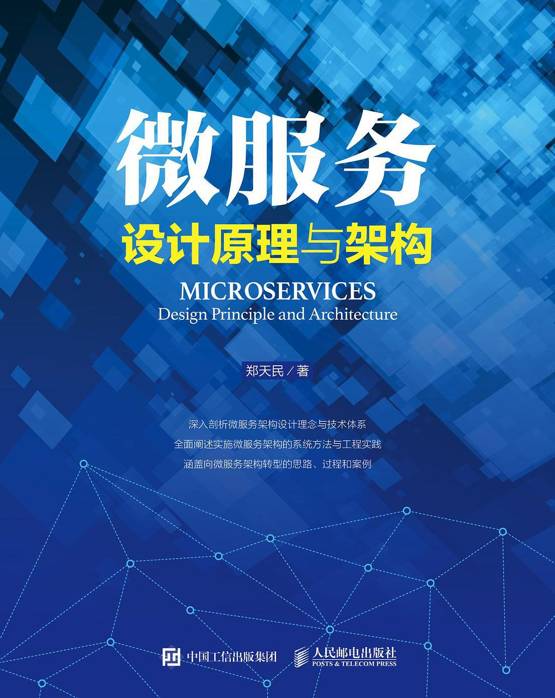

微服务设计原理与架构¶

简介:
作者：郑天民
评分：8.0(8.5)
出版年: 2018-05-01
短评:
2021-05-31:
今天看完这本书。
这本书是自《微服务设计》后的另一本比较好的书。
相比《微服务设计》，这本书内容更新，填补了一些「微服务」起来以后的新知识
更难得的是，这本书是中国人写的，在现在浮躁的国内，从头写一本好书很难。
其中：我感觉最好的点是前面讲了一些理论，后面用一个实例使用相关理论来加深理解。
整理了一部分，还没完全整理完，我之后需要把内容吸收成自己的东西。
内容简介:
本书共分为四大篇幅内容，包括：
1. 直面微服务篇，剖析微服务架构的基本特征、优势和劣势，并给出实施微服务架构的系统方法。
2. 服务建模篇，介绍服务建模的思路和方法，并从服务拆分和集成角度对服务模型进行重点展开。
3. 服务实现篇，介绍微服务架构涉及的基础组件、关键要素以及目前主流的技术实现体系。
4. 服务转型篇，包括对遗留系统进行微服务架构的改造方法以及对研发过程转型的讨论。
作者简介:
本书作者有近 10 年软件行业从业经验，在医疗、安防和电商行业都有所涉及，
主持和参与过多个大型企业级应用和移动互联网系统的开发和管理工作，
前后担任技术经理、系统分析架构师和部门经理等职务，目前就职于一家国内电商独角兽企业。
主持过十余个面向研发人员的技术和管理类培训系统课程，善于提炼和抽象核心内容作为教学内容，
善于知识分享和技术人员培养，对系统架构设计和研发过程改进有丰富的经验和较深的理解。
目录:
目 录
第 一篇 直面微服务 1
第 1 章 直面微服务架构 2
1.1 分布式系统 3
1.1.1 单块系统的问题 3
1.1.2 分布式系统的基本特征 6
1.2 微服务架构 8
1.2.1 微服务的概念 9
1.2.2 微服务架构基础 10
1.2.3 微服务架构与现有架构体系
对比 12
1.3 构建微服务架构的系统方法 14
1.3.1 服务模型 15
1.3.2 实现技术 15
1.3.3 基础设施 16
1.3.4 研发过程 16
1.4 微服务架构的优势 16
1.4.1 技术优势 16
1.4.2 业务与组织优势 18
1.5 微服务架构的挑战 20
1.5.1 技术架构挑战 20
1.5.2 研发过程挑战 21
1.6 实施微服务架构 22
1.6.1 微服务架构实施前提 22
1.6.2 微服务架构实施模式 23
1.7 本章小结 23
第二篇 服务建模 24
第 2 章 服务建模方法 25
2.1 服务分类 25
2.1.1 服务的基本类别 26
2.1.2 服务与业务 29
2.2 服务模型 30
2.2.1 服务的概念模型 31
2.2.2 服务的统一表现形式 32
2.3 服务边界 33
2.3.1 识别业务领域及边界 33
2.3.2 界限上下文 36
2.3.3 服务边界划分的原则 41
2.4 服务数据 41
2.4.1 规范化数据模型的问题 41
2.4.2 数据去中心化 42
2.5 本章小结 47
第 3 章 服务拆分与集成 48
3.1 服务拆分 49
3.1.1 服务拆分的维度 49
3.1.2 服务拆分的策略 50
3.1.3 管理服务的依赖关系 53
3.1.4 管理服务的数据 56
3.1.5 管理事务的边界 59
3.2 服务集成 61
3.2.1 系统集成基础 61
3.2.2 RPC 62
3.2.3 REST 64
3.2.4 消息传递 70
3.2.5 服务总线 72
3.2.6 数据复制 74
3.2.7 客户端集成 76
3.2.8 外部集成 78
3.3 本章小结 80
第三篇 服务实现 81
第 4 章 微服务架构基础组件 82
4.1 服务通信 82
4.1.1 网络连接 82
4.1.2 IO 模型 83
4.1.3 可靠性 85
4.1.4 同步与异步 85
4.2 事件驱动 88
4.2.1 基本事件驱动架构 88
4.2.2 事件驱动架构与领域模型 89
4.3 负载均衡 92
4.3.1 服务器端负载均衡 92
4.3.2 客户端负载均衡 93
4.3.3 负载均衡算法 94
4.4 服务路由 95
4.4.1 直接路由 95
4.4.2 间接路由 96
4.4.3 路由规则 96
4.5 API 网关 97
4.5.1 网关的作用 98
4.5.2 网关的功能 99
4.6 配置管理 100
4.6.1 配置中心模型 101
4.6.2 分布式协调机制 102
4.7 本章小结 104
第 5 章 微服务架构关键要素 105
5.1 服务治理 106
5.1.1 服务注册中心 106
5.1.2 服务发布与注册 109
5.1.3 服务发现与调用 110
5.1.4 服务监控 111
5.2 数据一致性 113
5.2.1 分布式事务 113
5.2.2 CAP 理论与 BASE 思想 116
5.2.3 可靠事件模式 118
5.2.4 补偿模式 124
5.2.5 Sagas 长事务模式 126
5.2.6 TCC 模式 127
5.2.7 最大努力通知模式 133
5.2.8 人工干预模式 135
5.2.9 数据一致性模式总结 135
5.3 服务可靠性 136
5.3.1 服务访问失败的原因 136
5.3.2 服务失败的应对策略 138
5.3.3 服务容错 139
5.3.4 服务隔离 140
5.3.5 服务限流 143
5.3.6 服务降级 145
5.4 本章小结 148
第 6 章 微服务架构实现技术 149
6.1 微服务架构实现技术选型 149
6.1.1 技术选型的参考标准 150
6.1.2 微服务实现框架对比 152
6.2 Spring Boot 153
6.2.1 Spring Boot 概览 154
6.2.2 Spring Boot 核心原理 155
6.3 Spring Cloud 157
6.3.1 Spring Cloud 概览 157
6.3.2 Spring Cloud Netflix Eureka
与服务治理 159
6.3.3 Spring Cloud Netflix Ribbon
与负载均衡 165
6.3.4 Spring Cloud Netflix Hystrix
与服务容错 168
6.3.5 Spring Cloud Netflix Zuul 与
API 网关 177
6.3.6 Spring Cloud Config 与配置
中心 180
6.4 案例分析 184
6.4.1 服务建模 184
6.4.2 服务架构设计 186
6.4.3 服务实现 188
6.5 本章小结 193
第 7 章 微服务架构管理体系 194
7.1 服务测试 194
7.1.1 微服务测试的维度 195
7.1.2 微服务测试实现方法 198
7.1.3 消费者驱动的契约测试 200
7.2 服务交付与部署 205
7.2.1 微服务交付管理 205
7.2.2 基于 Docker 部署微服务 209
7.3 服务监控 219
7.3.1 日志聚合 220
7.3.2 服务跟踪 224
7.4 服务安全 227
7.4.1 通用安全性技术 228
7.4.2 安全性协议 230
7.4.3 微服务中的安全性设计 235
7.5 本章小结 237
第四篇 服务转型 239
第 8 章 向微服务架构转型 240
8.1 微服务架构转型过程与方法 241
8.1.1 调整架构的技术 242
8.1.2 微服务架构与现有系统 245
8.1.3 微服务实施最佳实践 251
8.2 微服务架构与研发过程转变 256
8.2.1 产品管理转变 256
8.2.2 组织架构转变 259
8.2.3 研发文化转变 262
8.3 微服务架构转型案例分析 264
8.3.1 系统描述 264
8.3.2 微服务架构改造整体方案 268
8.3.3 微服务架构改造第 一阶段 268
8.3.4 微服务架构改造第二阶段 273
8.3.5 微服务架构改造第三阶段 280
8.3.6 微服务架构改造第四阶段 285
8.4 本章小结 290
参考文献 291